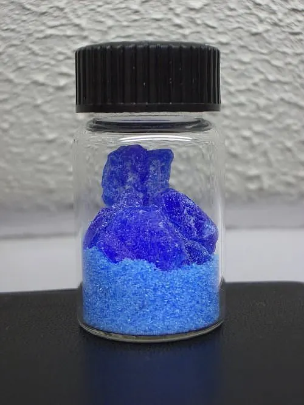
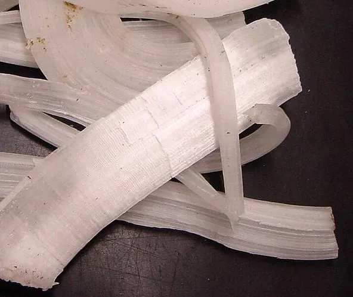
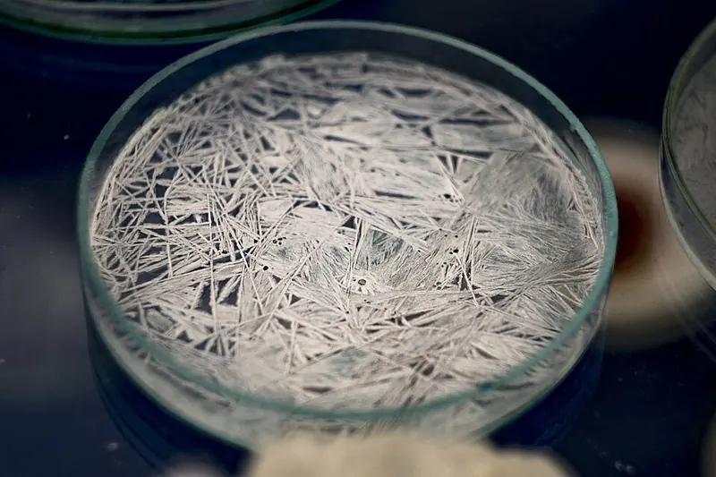

Cambridge Lower Secondary · Science 0893 · Stage 8
Impure Products and Solubility of Salts
Why real reactions give impure mixtures, how to separate and purify a salt, and how to read and use solubility curves — with worked examples, common mistakes and a Checkpoint-style quiz.
British & IGCSE › Checkpoint 8 › Checkpoint 8 Science — Complete Course
- Know that a reaction does not always give one pure product: often you get an impure mixture of products, and it must be separated. (8Cc.04)
- Describe how the solubility of different salts changes with temperature, and read and use solubility graphs. (8Cc.05)
1. Key words
| Word / phrase | Meaning / use |
|---|---|
| product | ناتج — a new substance made in a reaction |
| reactant | مادة متفاعلة — a substance you start with |
| pure | نقي — contains only one substance |
| impure | غير نقي — the wanted substance is mixed with other substances |
| impurity | شائبة — an unwanted substance mixed with the product |
| excess | زيادة — more than is needed, so some is left over |
| by-product | ناتج ثانوي — an extra product made alongside the one you want |
| salt | ملح — a compound made when an acid reacts, e.g. copper sulfate, sodium chloride |
| solubility | الذوبانية — the largest mass that dissolves in 100 g of water at a stated temperature |
| saturated solution | محلول مشبع — no more solute can dissolve in it at that temperature |
| crystallisation | التبلور — forming crystals as a solution cools or its water evaporates |
| solubility curve | منحنى الذوبانية — a graph of solubility against temperature |
2. Reactions often give a mixture, not one pure product
In Stage 7 you wrote word equations such as magnesium + hydrochloric acid → magnesium chloride + hydrogen. A word equation makes it look as if you finish with neat, separate products. In a real laboratory, what is left in the flask at the end is almost always a mixture. The product you want is impure, and you must separate and purify it.
Remember from the purity lesson: purity describes how much of the wanted chemical is in a sample. A sample that is 100 % one substance is pure. Anything else mixed in is an impurity.
| Why the product is impure | Example |
|---|---|
| 1. More than one product is made. Many reactions make two or three products at the same time. | copper carbonate + sulfuric acid → copper sulfate + water + carbon dioxide. The copper sulfate ends up dissolved in the water. |
| 2. Some reactant is left over. Chemists often add one reactant in excess to make sure the other one is used up. | Excess black copper oxide powder stays at the bottom of the beaker after reacting with sulfuric acid. |
| 3. Side reactions happen. Some of the reactants react in a different way and make unwanted substances. | When a fuel burns in too little oxygen it makes carbon monoxide and soot (carbon) as well as carbon dioxide and water. |
| 4. The starting materials were impure. Impurities in the reactants are carried into the product. | Rock salt dug from the ground contains sand and clay, so salt made from it is impure until it is purified. |
3. Getting a pure product: making copper sulfate crystals
Here is the standard way to make a pure, dry salt from an insoluble solid and an acid. Learn the reason for each step — Checkpoint often asks "Why did the student…?"
| Step | What you do | Why |
|---|---|---|
| 1 | Warm some dilute sulfuric acid in a beaker. | Warm acid reacts faster. |
| 2 | Add copper oxide a spatula at a time, stirring, until some black powder stays and will not react. | Adding excess copper oxide makes sure all the acid is used up, so no acid is left in the product. |
| 3 | Filter the mixture. | Removes the unreacted copper oxide (the residue). The blue copper sulfate solution goes through (the filtrate). |
| 4 | Heat the filtrate in an evaporating basin until about half the water has gone, then leave it to cool. | The solution becomes saturated. As it cools, the salt is less soluble, so crystals form. |
| 5 | Filter off the crystals, wash with a little cold water and dry them between filter papers. | Removes the last bits of solution so the crystals are pure and dry. |

How can you tell if a product is pure? A pure substance melts (and boils) at one fixed temperature. An impure substance melts over a range of temperatures, usually lower than the pure substance. Paper chromatography is another test: a pure substance gives only one spot.
Percentage purity. You can describe how pure a sample is with a percentage:
percentage purity = (mass of the wanted substance ÷ mass of the whole sample) × 100
- التفاعل في المعمل نادرًا ما يدّيك مادة واحدة نقية. غالبًا بيكون معاك خليط: أكتر من ناتج (زي الملح والمية)، أو مادة متفاعلة فاضلة (زيادة)، أو تفاعلات جانبية، أو شوائب جاية من المواد الأصلية.
- علشان كده لازم نفصل وننقّي: الترشيح يشيل المادة الصلبة اللي ما بتدوبش، والتبخير والتبريد يطلّعوا البلورات.
4. Solubility
When a salt dissolves in water, the salt is the solute, the water is the solvent and the mixture is a solution. If you keep adding salt and stirring, there comes a point when no more will dissolve — some solid stays at the bottom. The solution is now saturated.
The solubility of a substance is the largest mass that will dissolve in 100 g of water at a stated temperature. Its unit is g per 100 g of water. For example, the solubility of sodium chloride at 20 °C is about 36 g per 100 g of water: 100 g of water at 20 °C can dissolve 36 g of salt, but no more.

A solubility value means nothing without a temperature, because solubility changes with temperature. "The solubility of potassium nitrate is 32 g" is incomplete; "32 g per 100 g of water at 20 °C" is correct.
5. How solubility changes with temperature
Scientists measure the solubility of a salt at several temperatures and plot a solubility curve. The table and graph show approximate values for three salts.
| Temperature (°C) | 0 | 20 | 40 | 60 | 80 |
|---|---|---|---|---|---|
| potassium nitrate | 14 | 32 | 61 | 106 | 167 |
| copper sulfate | 14 | 21 | 29 | 40 | 55 |
| sodium chloride | 36 | 36 | 37 | 37 | 38 |
What the graph tells you:
- For most salts, solubility increases as the temperature increases — hot water dissolves more salt than cold water.
- The amount of change is very different for different salts. Potassium nitrate rises very steeply (from 14 g at 0 °C to 167 g at 80 °C — more than ten times as much). Copper sulfate rises steadily.
- Some salts hardly change. Sodium chloride (common salt) dissolves only about 2 g more at 80 °C than at 0 °C — its curve is almost flat.
- A few salts are even slightly less soluble in hot water (lithium carbonate is one example), so never assume — always read the graph.
- Where two curves cross, the two salts have the same solubility at that temperature (potassium nitrate and sodium chloride at about 23 °C).
Using particles: in hotter water the particles move faster and have more energy, so for most salts the water can break up and hold more of the salt's particles. You do not need to explain this in detail at Stage 8, but you must be able to describe the pattern from data.
6. Reading and using a solubility curve
- Solubility at a temperature: go up from the temperature to the curve, then across to the solubility axis.
- Temperature for a given solubility: go across from the solubility to the curve, then down to the temperature axis.
- Comparing salts: at a given temperature, the higher curve is the more soluble salt.
- Crystals formed on cooling: mass of crystals = solubility at the hot temperature − solubility at the cold temperature (for 100 g of water).
- Other masses of water: scale up or down. 50 g of water dissolves half as much as 100 g; 200 g dissolves twice as much.

- الذوبانية = أكبر كتلة من الملح بتدوب في 100 جرام مية عند درجة حرارة معينة.
- معظم الأملاح بتدوب أكتر لما المية تسخن، بس كل ملح بيتغيّر بمقدار مختلف (ملح الطعام تقريبًا ما بيتغيّرش).
- لما محلول مشبع سخن يبرد ← الذوبانية تقل ← الملح الزيادة يطلع بلورات. كتلة البلورات = الذوبانية وهو سخن − الذوبانية وهو بارد.
7. Worked examples
Worked example 1 — Sara makes magnesium sulfate by adding magnesium powder to dilute sulfuric acid until no more fizzing happens and some grey magnesium is left. magnesium + sulfuric acid → magnesium sulfate + hydrogen (a) Explain why the mixture in the beaker is not pure magnesium sulfate. [2] (b) Why did Sara add magnesium until some was left over? [1]
- (a) The magnesium sulfate is dissolved in water (it is a solution) (1), and there is unreacted magnesium left over (1). (The hydrogen escapes as a gas.)
- (b) So that all the acid is used up — no acid will be left mixed with the product.
- Common mistake: writing "the hydrogen makes it impure". Hydrogen is a gas and bubbles away; the impurities that stay are the water and the leftover magnesium.
Worked example 2 — A 40 g sample of salt made in a reaction contains 34 g of potassium chloride. Calculate its percentage purity. [2]
- Percentage purity = (mass of potassium chloride ÷ mass of sample) × 100
- = (34 ÷ 40) × 100 = 0.85 × 100
- = 85 %
Worked example 3 — Use the graph in section 5. (a) What is the solubility of potassium nitrate at 40 °C? [1] (b) Which salt is the most soluble at 10 °C? [1]
- (a) Up from 40 °C to the potassium nitrate curve, then across: 61 g per 100 g of water.
- (b) At 10 °C the highest curve is the dotted line: sodium chloride (about 36 g). Potassium nitrate is only about 22 g at 10 °C.
- Common mistake: in (b), choosing potassium nitrate because it is "the most soluble salt". It is only the most soluble above about 23 °C — always read the temperature you are asked about.
Worked example 4 — A saturated solution of potassium nitrate is made with 100 g of water at 60 °C. It is cooled to 20 °C. Calculate the mass of crystals that forms. [2]
- At 60 °C, 100 g of water holds 106 g of potassium nitrate.
- At 20 °C it can hold only 32 g.
- Mass of crystals = 106 − 32 = 74 g (1 mark for both readings, 1 mark for the answer).
Worked example 5 — A saturated solution of copper sulfate is made with 50 g of water at 80 °C and cooled to 20 °C. What mass of crystals forms? [2]
- For 100 g of water: 55 g at 80 °C and 21 g at 20 °C, so 55 − 21 = 34 g of crystals.
- 50 g is half of 100 g, so the mass is halved: 34 ÷ 2 = 17 g.
- Common mistake: giving 34 g — the graph is always for 100 g of water, so scale to the mass you are given.
Worked example 6 — Describe how the solubility of sodium chloride and potassium nitrate change between 0 °C and 80 °C. Use data in your answer. [2]
- Potassium nitrate: solubility increases a lot, from 14 g to 167 g per 100 g of water (1).
- Sodium chloride: solubility increases only very slightly / hardly changes, from 36 g to 38 g (1).
- Exam tip: "Use data" means quote numbers with units from the table or graph. A pattern with no numbers usually loses a mark.
- Thinking a word equation means you get pure products. In practice you usually get a mixture that must be separated.
- Forgetting that the salt is dissolved in water — a solution is a mixture, not the pure salt.
- Using evaporation to remove an insoluble solid. Insoluble solids are removed by filtration.
- Giving a solubility with no temperature, or with the wrong unit (it is g per 100 g of water).
- Saying "all salts dissolve more when hot". Most do, but by very different amounts, and a few dissolve less.
- In cooling questions, reading only one value. Crystals = hot value − cold value, then scale for the mass of water.
- Reading the wrong curve when graphs have several lines — trace the line with your finger or a ruler.
- Explain why the product is impure (2 marks): name the extra substances — water, leftover reactant, other products.
- Give the reason for a step in a salt preparation: excess solid → all acid used up; filter → remove leftover solid; cool → crystals form.
- Read a solubility graph: value at a temperature, temperature for a value, which salt is more soluble, where curves cross.
- Calculate crystals on cooling — show both readings and the subtraction; scale for 50 g or 200 g of water.
- Describe the trend with data ("as the temperature increases, the solubility increases from … to …").
- Plan a solubility investigation: variables, saturated solution, repeats, safety (hot water, goggles).
- Write units every time: g per 100 g of water, °C, %.
Practice
- Reactions often give an impure mixture: several products, leftover (excess) reactant, side reactions, or impure starting materials.
- Separate and purify: filter off insoluble solids, evaporate and cool to crystallise, then wash and dry the crystals.
- Percentage purity = (mass of wanted substance ÷ mass of sample) × 100.
- Solubility = largest mass that dissolves in 100 g of water at a stated temperature; most salts dissolve more when hotter, by very different amounts.
- Crystals on cooling = solubility (hot) − solubility (cold), scaled for the mass of water.
All pages in this course
Start here
- Stage 8 Science: The Tests and How to Prepare
- Thinking and Working Scientifically: Models, Investigations and Analysing Results
Biology
- Joints and Antagonistic Muscles
- Blood and Its Components
- Breathing, Gas Exchange and Diffusion in the Lungs
- A Balanced Diet, Energy Stores and Lifestyle
- Aerobic Respiration
- Ecosystems, Bioaccumulation and Invasive Species
Chemistry
- The Structure of the Atom
- Purity, Concentration and Chromatography
- Word Equations, Exothermic and Endothermic Reactions
- The Reactivity of Metals
- Impure Products and Solubility of Salts
Physics
- Speed and Distance–Time Graphs
- Balanced and Unbalanced Forces, and Moments
- Pressure, Particles and Diffusion
- Reflection and Refraction
- Dispersion and Colour
- Magnetic Fields and Electromagnets
Earth and space
- The Earth's Magnetic Field and Earth's Resources
- Climate, Weather and Climate Change
- Galaxies and Asteroids
Practice tests